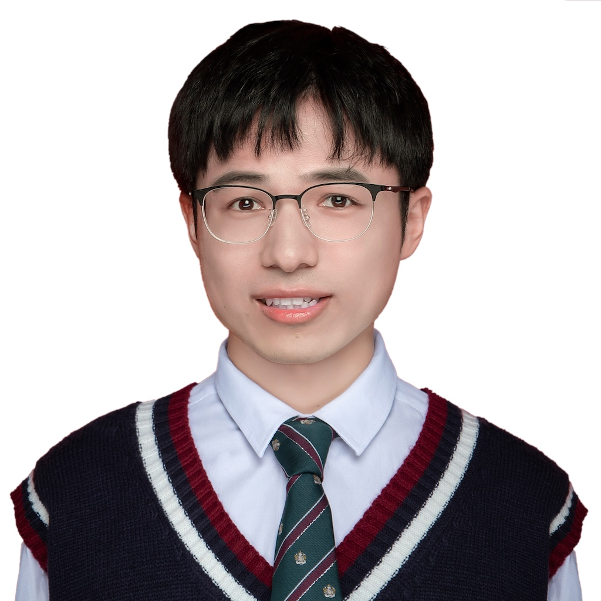

Xiaohang Zhan (詹晓航)
Researcher
Central Media Technology Institute, 2012 Labs, Huawei Technologies Co., Ltd
email
Researcher
 orcid.org/0000-0003-2136-7592
orcid.org/0000-0003-2136-7592Central Media Technology Institute, 2012 Labs, Huawei Technologies Co., Ltd


Published with GitHub Pages